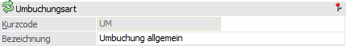
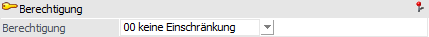
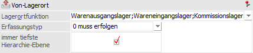
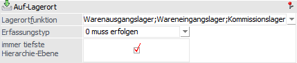
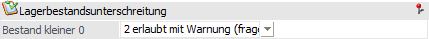

Im Register "Stamm" werden die allgemeinen Stammdaten zu der Umbuchungsart hinterlegt.

Folgende Einstellungen stehen in diesem Register zur Verfügung:
Umbuchungsart

Ø Kurzcode
In diesem Feld wird der 3-stellige Kurzcode für die Lagerortumbuchungsart definiert. Ein Editieren dieses Codes ist nur bis zur erstmaligen Speicherung der Umbuchungsart möglich.
Ø Bezeichnung
An dieser Stelle wird die Bezeichnung für die Umbuchungsart hinterlegt.
Berechtigung

Ø Berechtigung
Für jede Umbuchungsart kann ein Berechtigungsprofil hinterlegt werden. Wenn der Anwender eine Umbuchungsart aufruft, wird geprüft, ob der Anwender einer Benutzergruppe zugeordnet wurde, welche in dem jeweiligen Profil enthalten ist und ob somit eine Verwendung erlaubt wäre (nähere Informationen entnehmen Sie bitte dem WinLine ADMIN - Handbuch).
Von-Lagerort

Ø Lagerortfunktion
Aus der Auswahlbox können die Lagerortfunktionen ausgewählt werden, welche im Bereich "von Lagerort" verwendet werden sollen.
Ø Erfassungstyp
An dieser Stelle kann definiert werden, ob die Angabe eines "von Lagerorts" zwingend notwendig ist. Hierfür stehen die folgenden Optionen zur Verfügung:
ü 0 - muss erfolgen
ü 1 - kann erfolgen
ü 2 - kann erfolgen (Warnung)
Ø immer tiefste Hierarchie-Ebene
Mit Hilfe dieser Option kann gesteuert werden, dass der Lagerort des "von Lagerorts" immer der tiefsten Hierarchie-Ebene entsprechen muss.
Hinweis
Im Standard wird in allen Programmbereichen der WinLine ausschließlich mit Lagerorten der tiefsten Hierarchie-Ebene gearbeitet!
Auf-Lagerort

Ø Lagerortfunktion
Aus der Auswahlbox können die Lagerortfunktionen ausgewählt werden, welche im Bereich "auf Lagerort" verwendet werden sollen.
Ø Erfassungstyp
An dieser Stelle kann definiert werden, ob die Angabe eines "auf-Lagerorts" zwingend notwendig ist. Hierfür stehen die folgenden Optionen zur Verfügung:
ü 0 - muss erfolgen
ü 1 - kann erfolgen
ü 2 - kann erfolgen (Warnung)
Ø immer tiefste Hierarchie-Ebene
Mit Hilfe dieser Option kann gesteuert werden, dass der Lagerort des "auf Lagerorts" immer der tiefsten Hierarchie-Ebene entsprechen muss.
Hinweis
Im Standard wird in allen Programmbereichen der WinLine ausschließlich mit Lagerorten der tiefsten Hierarchie-Ebene gearbeitet!
Lagerbestandsunterschreitung

Ø Bestand kleiner 0
An dieser Stelle kann definiert werden, ob der Bestand eines Lagerorts den Wert 0 unterschreiten darf. Folgende Möglichkeiten zur Steuerung stehen zur Verfügung:
ü 0 - erlaubt
Die Unterschreitung
eines Lagerbestands kleiner 0 ist erlaubt.
ü 1 - erlaubt mit Warnung
Die
Unterschreitung eines Lagerbestands kleiner 0 ist erlaubt, es wird hierauf
allerdings bei der Erfassung hingewiesen.
ü 2 - erlaub mit Warnung
(fragen)
Generell ist die Unterschreitung eines Lagerbestands kleiner 0
erlaubt, allerdings erscheint beim Bestätigen der Menge eine Abfrage, ob die
Erfassung wirklich vorgesetzt werden soll.
ü 3 - nicht erlaubt
Die
Unterschreitung eines Lagerstandes kleiner 0 ist verboten.